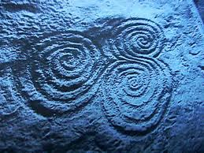

Eadem Mutata Resurgo “I shall arise the same though changed”
That is the inscription on the tombstone of Jakob Bernouilli, a Swiss Mathematician (1654 - 1705), who wrote a treatise about spirals called Spira mirabilis (Wonderful Spirals).
 Indeed, spirals are wonderful, miraculous, and almost magical magical shapes. They embody the dynamic principles of regeneration and symmetrical and balanced growth. Spirals are the divine symbol of life -- either expanding, growing, and being drawn out, or diminishing, dissolving, and collapsing.
The spiral is found everywhere, from our DNA to roses; from cowlicks to hurricanes; from our fists to galaxies. In this next Deep Dance you are invited to come and explore spirals.
The music and dance will facilitate an inward movement of psyche. We gather the universal, group, and individual energy and fold it up on our journey towards the center or the source. There, in the eye of Horus, the place of stillness, we can see clearly who we are. When we see who we are, something magical happens: we’re able to pass through the gateway of our illusions and come out on the other side, spiralling out in a process of emergence, expansion, and joyful creativity.
As before we will dance joyfully and dynamically and with intent with each other and ourselves inside the sacred space of the spiral. Touch is an integral part of our journey and I encourage you to read the FAQ page at www.deepdancelightspirit.com to learn more about that.
In order to fully love yourself and others, you must be willing to